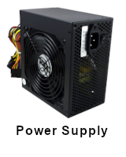
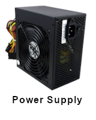

Building a gaming PC
A gaming PC needs:


 



Optional:

After knowing the parts needed, the next step is to figure out the parts you need. I will be using Assasin creed system requirments as the basis.
Motherboard

The motherboard is the part that combine and facilitate the communication between all the other parts. For that reason it is important to choose a good motherboard
Things to look for in a motherboard:
- What CPU chipset does it support?
You need to make sure that the motherboard is compatible with the CPU you chose. There isnt many motherboard types (at least not for AMD CPUs). if you choose an old model however you need to have an old CPU to update the BIOS so it can recognize the next gen CPUs. That or
- What type and version of PCI-e does it have
Peripheral Component Interconnect Express (PCI-e) are the slots where you plug your expansion cards. expansion cards come with a set of pins that goes into these slots. x1, x4, x8 and x16. GPUs typically come in x16. In some motherboards they can be plugged into x8 but using only the x8 throughput. A test made by gamersnexus showed that there is no real difference in performance between x8 and x16 If it came to this pick the one that is cheaper. start from version 2.0 @ x16 and up. you want to aim at at a minimum you would need 1 GPU slot and 1 RAM slot.
- What size is it.
bigger forms have more expansion slots and therefore more options but smaller form factors are more compact and portable.
Below are the 3 common sizes.

Once you have picked the motherboard it is time to pick the main brain or the CPU
Central Processing Unit (CPU)

CPU purpose is to process software instructions. It is important to have a fast CPU so you do not experince lag All CPUs use the same basic arithmetic to process instructions.
Things to look for in a CPU:
- CPU clock speed (in GHz)
To give you a perspective A CPU with speed of 2 gigahertz performs 2 billion operation per second. you want to
- # of Cores (# of integrated chips) it has.
Modern CPU chips have multiple "cores". Each core is a semi-independent CPU. NOTE: more cores does not mean faster CPU. A 4 cores is not 4x faster than 1 core. i.e 4 cars does not get you there faster than 1 car.
More cores can enhance the gaming but more than 4 cores is really an overkill. If there is a game that require 4 or more cores is most likely poor coding. There is 2 major CPU makers: Intel and AMD. I have tried to understand their naming convention for their chips but it seems that there is no real pattern
Random Access Memory (RAM)

RAM is used for temporary storage. its faster to retrieve information from RAM than directly from the long term storage. Current Gen4 comes in 7 speeds (Mhz) • DDR4 1600 • DDR4 1866 • DDR4 2133 • DDR4 2400 • DDR4 2666 • DDR4 2933 • DDR4 3200 More RAM is generally better. RAMs are fairly fast in storing and retrieving data. A 6 to 8GB DDR4 RAM with 2133-2400Mhz should good for most games. The next RAM gen DDR5 comes out in 2020 with speeds reaching 4800Mhz. but adoption by CPU makers wont be till 21-22. If you want to get technical there are latency calculation of ram CAS is the memory timings. The time it takes the memory to access columns of data. It has the following format: 15-16-16-35 the first column represent the CAS latency column access strobe. Its the number of clock cycles that pass between when an instruction is given and when the information is made available. To calculate this you do (CAS latency/RAM clock) x 2000 = latency in nanosecond (billionth of a second) if you have CAS 15 and clock speed of 2400mhz (15/2400)x2000 = 12.5 nanoseconds if you have CAS 17 and clock speed of 2666mhz (17/2666)x2000 = 12.75 nanoseconds If two rams with the same clock speed but different CAS latency example DDR4-3600 with CAS 15 has latency of 8.33 nanosecond DDR4-3600 with CAS 19 has latency of 10.56 nanoseconds This really does not matter much for most purposes the differences in very small that you wont even notice a performance change.
Things to look for in a RAM
- Capacity (in GB) Capacity determine the max data the RAM can retain. It is better to go for more capacity. I would suggest no more than 8GB of RAM will be enough.
- speed (in Mhz) Speed determine the time it takes the RAM to retrieve Data from its table.
Graphical Processing Unit (GPU)
As games evolved there was a need for more specialized chips specially for repetitive instructions to process as a stand alone. This is where GPU comes into play. If CPU process code instructions GPU process graphical instructions. These instructions are passed to the GPU for processing. There is 2 major GPU makers: AMD and Nvidia. Both are great but AMD again is cheaper, and more mainstream. Nvidia is more for extreme setups What you should be looking for in a GPU: GPU clock speed (MHz) memory bus (bits) vRAM size (MB) memory clock rate (MHz) memory bandwidth (GB/s) The CPU and Motherboard also play a part since a fast GPU cannot compensate for a motherboard inability to deliver data quickly. similarly the card connection to the motherboard and the speed at which it can get instructions from the CPU
Long Term Persistent Storage
This is a non-volatile storage medium. It is slower than a RAM SSD are faster than a HDD and more expensive too. it comes with different forms. If you want faster boot time and faster file transfers then SSD cards are desirable. They are typically less heavy and can be portable. HDD uses a moving disk to store data and that is slower than SSD.
Things to look for in storage device:
- size (GB)
- speed (GHz)
Cooling sources
You need some cooling device for your system to avoid overheating, like a car radiator. read more here but for our purposes a refular fan will suffice
Things you should be looking for
- pins in the fans
some fans connect and controlled automatically by the motherboard and some can be controlled by the user. Depending on the section you plug it in
Power Supply
Display Monitor
Why bother with a gaming setup if you cannot enjoy the result? :) The Display plays an important part in the pc build process deserve its own article read more here but for our purposes ill keep it brief.
Things to look for in a Display Monitor
- How wide is it and what resuotion
does it support
width is the physical dimension of the Display my research showed me that a standard gaming display is 27-30 inches. with support for 1080p and more.
- How many Frames per second does it support
This can range from 64 to 128 FBS more frames = smoother picture. you do not need more than 32FPS
Keyboard and Mouse
If you want to game you want a keyboard that is big enough for fast tapping. For the Mouse you really can go with any. you can go for more aethetic Mouse but for the most part it will be the same
- The size of the key board
Chassis
Chassis are optional, Its just a way to neatly orgnize everything. you can hang them from the balcony if you want to. If you decide to go with a chassis then have some points in mind
- the size of the chassis
you want a reasonable space between parts for air flow.
Building a Computer can be a fun activity once you become familiar with its components. Its like building a car engine but with no gas or pollution. If you feel ready or want to experement with the different factors mentioned above I recommend pc part picker